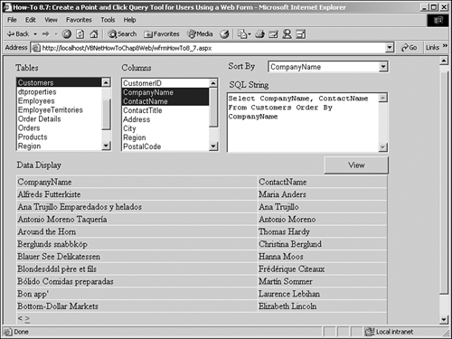

As useful-if not more so-than the example shown in the 8.3 How-to, this exercise will show you how to add a data-driven query tool to your ASP.NET application.
When creating database applications, even on the Web, one of your clients inevitably wants to be able to examine the data in his database, and not necessarily in edit pages. The client wants to be able to list his data out and examine the data at his leisure.
Giving the user the flexibility to do this via the Web is not as big of a hassle as it sounds. This How-To will show you how to create a page to view the tables in your database, using a nice point-and-click interface.
To accomplish the task just presented, you will be using the OleDbCommand and DataReader objects. Along with these objects, you will be using some stored procedures that SQL Server supplies. Those stored procedures list the various objects within a SQL Server database-in this case, Northwind's tables and columns.
You will take the elements returned in the DataReader object and load the Add method of the ListBox object.
You will also use the Session object as you did in the previous How-To to save a DataTable object for use over trips to the server.
Finally, the ViewState object will be used to store a string variable when going to the server and back. The ViewState object is a good .NET state object to use for small pieces of data, such as strings.
Open and run the VB.NET -Chapter 8 solution. From the main Web Form, click on the hyperlink with the caption How-To 8.7: Create a Point-and-Click SQL Server Query Tool for Users Using a Web Form. When the new page opens, the first list box you see to the left is populated with the tables from Northwind. Click on the Customer table, and you will see the columns listed in the list box labeled Columns. Click on the CompanyName and ContactName, and you will see the SQL String text box filled in. After clicking on the View button, the Web page will look like the one displayed in Figure 8.14.
Create a Web Form. Then place the controls shown in Figure 8.14 with the properties set forth in Table 8.9.
|
Object |
Property |
Setting |
|---|---|---|
|
DOCUMENT |
bgColor |
buttonface |
|
Label |
Name |
Label1 |
|
Text |
Tables |
|
|
Label |
Name |
Label2 |
|
Text |
Columns |
|
|
Label |
Name |
Label3 |
|
Text |
SQL String |
|
|
Label |
Name |
Label4 |
|
Text |
Data Display |
|
|
ListBox |
Name |
lstTables |
|
AutoPostback |
True |
|
|
ListBox |
Name |
lstColumns |
|
SelectionMode |
Multiple |
|
|
AutoPostback |
True |
|
|
DropDown |
Name |
ddSortBy |
|
AutoPostback |
True |
|
|
TextBox |
Name |
txtSQLString |
|
MultiLine |
True |
|
|
Button |
Name |
btnView |
|
DataGrid |
Name |
dgDisplay |
|
AllowPaging |
True |
|
|
Hyperlink |
Name |
hplBackToMain |
|
Text |
Return To Main |
|
|
NavigateURL |
wfrmMain.aspx |
Tip
Notice that the lstTables list box allows the user to choose only one table at a time, whereas lstColumns allows the user to choose multiple columns. A great enhancement to this tool would be to allow the user to choose multiple tables and have the application figure out the relationship between tables and create joins automatically. |
In the class module for the form, add the following Private declaration just below the line of code that reads Web Form Designer Generated Code:
Private mdtDisplay As DataTable
On the Web Form, add the code in Listing 8.40 to the Load event. The first task is to load the tables list box, performed by the subroutine LoadTables(), which is also in this listing. The form only calls this routine if it is the first time into the page, by checking for Not Me.IsPostBack. The form then tests to see whether the Session object has an entry called MyDisplayDataTable. If the entry exists, then mdtDisplay is referenced to it, meaning that this time through the Load event is probably occurring on a trip back from the server. The entry exists, and the code needs to set a reference to it.
In LoadTables, the routine first creates a new OleDbConnection object called ocnn, an OleDbCommand object called ocmdTables. It then assigns the built-in SQL Server stored procedure called sp_Tables when instantiating ocmdTables. After establishing the CommandType as being CommandType.StoredProcedure and then opening the connection, the data reader called odrTables is created by calling the ExecuteReader method off ocmdTables.
Private Sub Page_Load(ByVal sender As System.Object,
ByVal e As System.EventArgs) Handles MyBase.Load
'Put user code to initialize the page here
If Not Me.IsPostBack Then
LoadTables()
End If
If Not (Session("MyDisplayDataTable") Is Nothing) Then
mdtDisplay = CType(Session("MyDisplayDataTable"), DataTable)
End If
End Sub
Sub LoadTables()
'-- Create the connection and specify the stored procedure to use.
Dim ocnn As New OleDb.OleDbConnection(BuildCnnStr("(local)", _
"Northwind"))
Dim ocmdTables As New OleDb.OleDbCommand("sp_Tables", ocnn)
Dim odrTables As OleDb.OleDbDataReader
'-- Specify the type of command being performed.
ocmdTables.CommandType = CommandType.StoredProcedure
ocnn.Open()
'-- Create the DataReader object.
odrTables = ocmdTables.ExecuteReader()
'-- Loop through and add table type object names
' to the lstTables list box.
Do While odrTables.Read
If odrTables.GetString(3) = "TABLE" Then
Me.lstTables.Items.Add(odrTables.GetString(2))
End If
Loop
End Sub
Next, the code loops through each of the items returned by the command. Those of type TABLE are added to the lstTables items. Then the connection is closed.
As mentioned, you will see a comparison to the literal TABLE. This is because the fourth column returned matches the current table type. The other two types are SYSTEMTABLE and VIEW. To see the data returned by the sp_tables stored procedure, open the Query Analyzer, as described in How-To 8.3.
On lstTables, add the code in Listing 8.41 to the SelectedIndexChanged event. This routine performs a similar feat as the previous routine; it will call a built-in stored procedure-in this case, sp_Columns. However, the next task in this step is to pass a parameter, TableName, which is the table chosen in lstTables.SelectedItem.Text. After the connection is opened, the DataReader called odrColumns is loaded with the ExecuteReader command. After the lstColumns.Items.Clear() method is called to clear the list, the new columns are added to the lstColumns Items collection. Then the connection is closed.
Private Sub lstTables_SelectedIndexChanged(ByVal sender As System.Object,
ByVal e As System.EventArgs) Handles lstTables.SelectedIndexChanged
'-- Create the connection and specify the stored procedure to use.
Dim ocnn As New OleDb.OleDbConnection(BuildCnnStr("(local)", _
"Northwind"))
Dim ocmdColumns As New OleDb.OleDbCommand("sp_Columns", ocnn)
Dim odrColumns As OleDb.OleDbDataReader
'-- Specify the type of command being performed
ocmdColumns.CommandType = CommandType.StoredProcedure
ocmdColumns.Parameters.Add("@TableName", Me.lstTables.SelectedItem.Text)
ocnn.Open()
'-- Create the DataReader object
odrColumns = ocmdColumns.ExecuteReader()
'-- Clear the current items in the list
Me.lstColumns.Items.Clear()
'-- Loop through and add table type object names
' to the lstTables list box.
Do While odrColumns.Read
Me.lstColumns.Items.Add(odrColumns.GetString(3))
Loop
End Sub
On lstColumns, add the code in Listing 8.42 to the SelectedIndexChanged event. After clearing the items from ddSortBy, this routine iterates through the Items collection of the lstColumns ListBox control, adding the chosen column names (those items with the Selected property set to True) to a string variable called strTemp. The DropDown control called ddSoryBy adds the column name to its Items collection.
After the string is finished iterating through the lstColumns Items, it is stored to a ViewState entry called SQLFields. The LoadSQLString routine is then called, which is also in this listing.
In the routine LoadSQLString, the length of the string is checked. If the length is greater than 0, the Text property of txtSQLString is set to the following expression: "Select " & strTemp & " From " & Me.lstTables.Text & " Order By " & Me.ddSortBy.SelectedItem.ToString. If the length is 0, then the Text property of txtSQLString is set to the empty string.
Private Sub lstColumns_SelectedIndexChanged(ByVal sender As System.Object,
ByVal e As System.EventArgs) Handles
lstColumns.SelectedIndexChanged
Dim intNumColumns As Integer
Dim oCurr As Object
Dim blnIsSelected As Boolean
Dim strTemp As String
Me.ddSortBy.Items.Clear()
'-- Cycle through each of the selected columns of the table chosen
' and combine them into a string.
For Each oCurr In Me.lstColumns.Items
If oCurr.Selected() = True Then
If Len(strTemp) > 0 Then
strTemp &= ", "
End If
strTemp &= oCurr.ToString
Me.ddSortBy.Items.Add(oCurr.ToString)
End If
Next
ViewState("SQLFields") = strTemp
LoadSQLString()
End Sub
Sub LoadSQLString()
'-- Take the string created and add it to the
' table name for a SQL String, if columns are chosen.
If Len(ViewState("SQLFields")) = 0 Then
Me.txtSQLString.Text = ""
Else
Me.txtSQLString.Text = "Select " & ViewState("SQLFields") & _
" From " & Me.lstTables.SelectedItem.ToString & _
" Order By " & Me.ddSortBy.SelectedItem.ToString
End If
End Sub
On btnView, add the code in Listing 8.43 to the Click event. This routine creates the new data adapter called odaDisplay, passes the Text property of txtSQLString, and then fills the dtDisplay DataTable. The public variable, called mdtDisplay, references dtDisplay so that it will be seen in other routines. The code then stores a new entry in the Session object called MyDisplayDataTable, which is loaded back into mdtDisplay upon reloading of the page. Last, the routine BindTheGrid is called to set to the DataSource property of the data grid called dgDisplay.
Private Sub btnView_Click(ByVal sender As System.Object, _
ByVal e As System.EventArgs) Handles btnView.Click
Dim odaDisplay As OleDb.OleDbDataAdapter
Dim dtDisplay As New DataTable()
Try
'-- Take the txtSQLString text and create a data table. Then set the
' data source of the data grid.
odaDisplay = New OleDb.OleDbDataAdapter(Me.txtSQLString.Text, _
BuildCnnStr("(local)", "Northwind"))
odaDisplay.Fill(dtDisplay)
mdtDisplay = dtDisplay
Session("MyDisplayDataTable") = mdtDisplay
BindTheGrid()
Catch excData As Exception
End Try
End Sub
Sub BindTheGrid()
Me.dgDisplay.DataSource = mdtDisplay
'-- Must databind for ASP.NET
Me.dgDisplay.DataBind()
End Sub
On the ddSortby control, attach the first routine in Listing 8.44 to the SelectedIndexChanged event. Then add the second routine to the PageIndexChanged event of dgDisplay.

Private Sub ddSortBy_SelectedIndexChanged(ByVal sender As System.Object,
ByVal e As System.EventArgs) Handles ddSortBy.SelectedIndexChanged
LoadSQLString()
End Sub
Private Sub dgDisplay_PageIndexChanged(ByVal source As Object, _
ByVal e As System.Web.UI.WebControls.DataGridPageChangedEventArgs)
Handles dgDisplay.PageIndexChanged
'-- Set the current page in the data grid
Me.dgDisplay.CurrentPageIndex = e.NewPageIndex
BindTheGrid()
End Sub
When the form is opened, the lstTables ListBox control is loaded with the tables from the Northwind database. When the user selects a table from the list, that table name is passed to the stored procedure. That procedure lists the columns in a database table that is specified in the connection-in this case, Northwind. These columns are loaded into lstColumns.
The user can click on multiple columns in lstColumns. Those columns then are added to the SQL Select string that is created and stored in txtSQLString. When the btnView button is clicked, the string is passed to a DataAdapter control, filling a data table. From there, the data is displayed when the data source of the DataGrid control is set to the data table.
Users can change the sort order by changing the value in the DropDown object.
You can enhance this tool in several ways:
Let users click on multiple tables and automatically create the join.
Add a list of columns for the user to choose to use for criteria, and allow the user to input the criteria.
Use this tool as a base for editing or reporting the records that are returned.
This technique's goal, as with others in this book, is to push you into thinking about the possibilities of what you can accomplish with Visual Studio .NET and your databases.